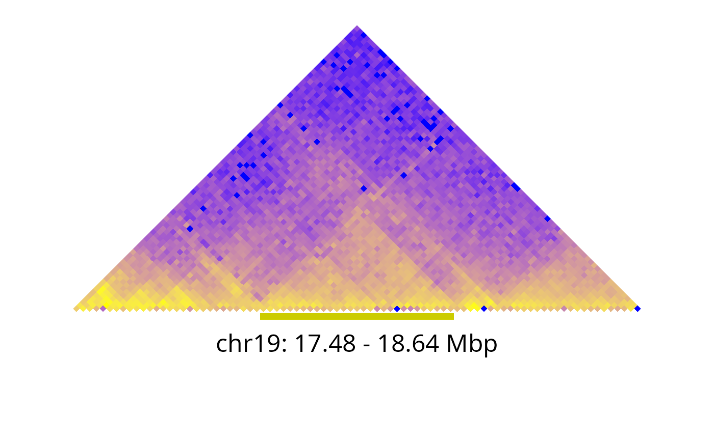
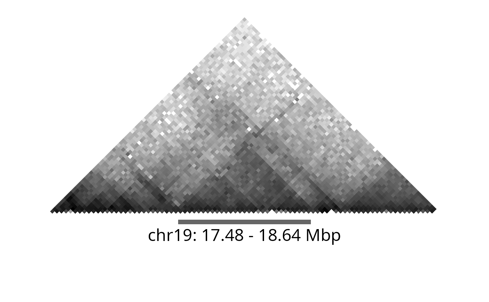
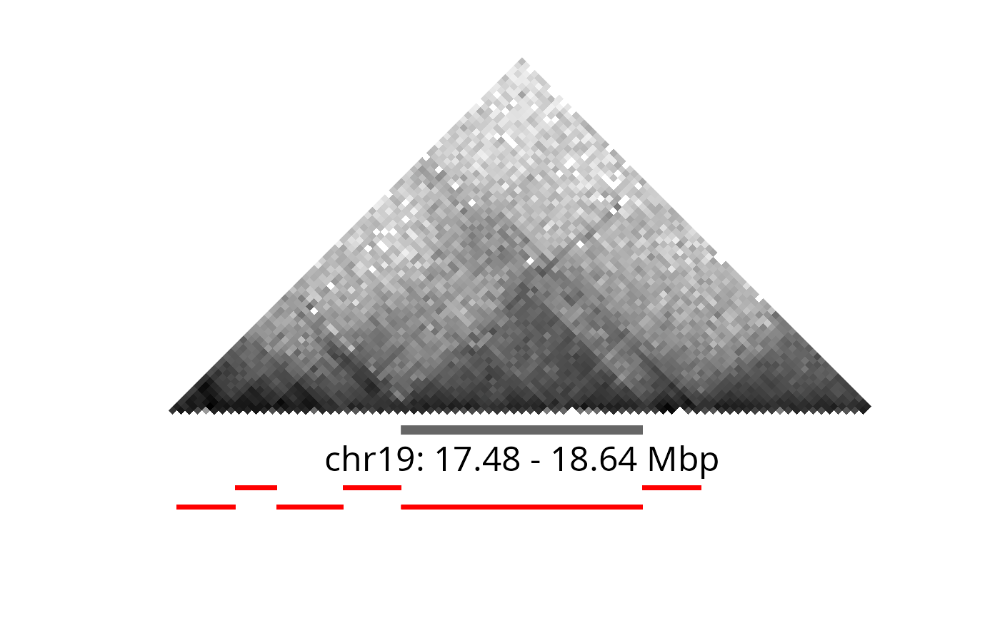
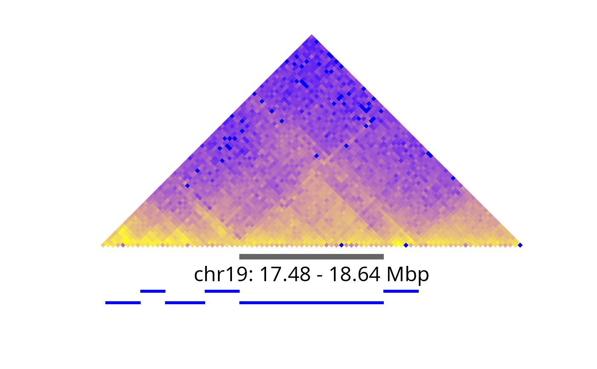

Identify Topological Domains from a Hi-C Contact Matrix
TopDom(
data,
window.size,
outFile = NULL,
statFilter = TRUE,
...,
debug = getOption("TopDom.debug", FALSE)
)A TopDomData object, or the pathname to a normalized
Hi-C contact matrix file as read by readHiC(), that specify N bins.
The number of bins to extend (as a non-negative integer). Recommended range is in {5, ..., 20}.
(optional) The filename without extension of the three result files optionally produced. See details below.
(logical) Specifies whether non-significant topological-domain boundaries should be dropped or not.
Additional arguments passed to readHiC().
If TRUE, debug output is produced.
A named list of class TopDom with data.frame elements
binSignal, domain, and bed.
The binSignal data frame (N-by-7) holds mean contact frequency,
local extreme, and p-value for every bin. The first four columns
represent basic bin information given by matrix file, such as
bin id (id), chromosome(chr), start coordinate (from.coord),
and end coordinate (to.coord) for each bin.
The last three columns (local.ext, mean.cf, and p-value) represent
computed values by the TopDom algorithm.
The columns are:
id: Bin ID
chr: Chromosome
from.coord: Start coordinate of bin
to.coord: End coordinate of bin
local.ext:
-1: Local minima.
-0.5: Gap region.
0: General bin.
1: Local maxima.
mean.cf: Average of contact frequencies between lower and upper
regions for bin i = 1,2,...,N.
p-value: Computed p-value by Wilcox rank sum test.
See Shin et al. (2016) for more details.
The domain data frame (D-by-7):
Every bin is categorized by basic building block, such as gap, domain,
or boundary.
Each row indicates a basic building block.
The first five columns include the basic information about the block,
'tag' column indicates the class of the building block.
id: Identifier of block
chr: Chromosome
from.id: Start bin index of the block
from.coord: Start coordinate of the block
to.id: End bin index of the block
to.coord: End coordinate of the block
tag: Categorized name of the block. Three possible blocks exists:
gap
domain
boundary
size: size of the block
The bed data frame (D-by-4) is a representation of the domain
data frame in the
BED file format.
It has four columns:
chrom: The name of the chromosome.
chromStart: The starting position of the feature in the chromosome.
The first base in a chromosome is numbered 0.
chromEnd: The ending position of the feature in the chromosome.
The chromEnd base is not included in the feature. For example,
the first 100 bases of a chromosome are defined as chromStart=0,
chromEnd=100, and span the bases numbered 0-99.
name: Defines the name of the BED line. This label is displayed to
the left of the BED line in the
UCSC Genome Browser
window when the track is open to full display mode or directly to
the left of the item in pack mode.
If argument outFile is non-NULL, then the three elements (binSignal,
domain, and bed) returned are also written to tab-delimited files
with file names <outFile>.binSignal, <outFile>.domain, and
<outFile>.bed, respectively. None of the files have row names,
and all but the BED file have column names.
The window.size parameter is by design the only tuning parameter in the
TopDom method and affects the amount of smoothing applied when calculating
the TopDom bin signals. The binning window extends symmetrically downstream
and upstream from the bin such that the bin signal is the average
window.size^2 contact frequencies.
For details, see Equation (1) and Figure 1 in Shin et al. (2016).
Typically, the number of identified TDs decreases while their average
lengths increase as this window-size parameter increases (Figure 2).
The default is window.size = 5 (bins), which is motivated as:
"Considering the previously reported minimum TD size (approx. 200 kb)
(Dixon et al., 2012) and our bin size of 40 kb, w[indow.size] = 5 is a
reasonable setting" (Shin et al., 2016).
Shin et al., TopDom: an efficient and deterministic method for identifying topological domains in genomes, Nucleic Acids Research, 44(7): e70, April 2016. DOI: doi:10.1093/nar/gkv1505 , PMCID: PMC4838359, PMID: 26704975
Shin et al., R script TopDom_v0.0.2.R, 2017 (originally from
http://zhoulab.usc.edu/TopDom/;
later available on https://github.com/jasminezhoulab/TopDom)
Shin et al., TopDom Manual, 2016-07-08 (original from
http://zhoulab.usc.edu/TopDom/TopDom%20Manual_v0.0.2.pdf;
later available on https://github.com/jasminezhoulab/TopDom)
Hanjun Shin, Understanding the 3D genome organization in topological domain level, Doctor of Philosophy Dissertation, University of Southern California, March 2017.
Dixon JR, Selvaraj S, Yue F, Kim A, et al. Topological domains in mammalian genomes identified by analysis of chromatin interactions. Nature; 485(7398):376-80, April 2012. DOI: doi:10.1038/nature11082 , PMCID: PMC3356448, PMID: 22495300.
path <- system.file("exdata", package = "TopDom", mustWork = TRUE)
## Original count data (on a subset of the bins to speed up example)
chr <- "chr19"
pathname <- file.path(path, sprintf("nij.%s.gz", chr))
data <- readHiC(pathname, chr = chr, binSize = 40e3, bins = 1:500)
print(data) ## a TopDomData object
#> TopDomData:
#> bins:
#> 'data.frame': 500 obs. of 4 variables:
#> $ id : int 1 2 3 4 5 6 7 8 9 10 ...
#> $ chr : chr "chr19" "chr19" "chr19" "chr19" ...
#> $ from.coord: num 0 40000 80000 120000 160000 200000 240000 280000 320000 360000 ...
#> $ to.coord : int 40000 80000 120000 160000 200000 240000 280000 320000 360000 400000 ...
#> counts:
#> num [1:500, 1:500] 0 0 0 0 0 0 0 0 0 0 ...
## Find topological domains using the TopDom method
fit <- TopDom(data, window.size = 5L)
print(fit) ## a TopDom object
#> TopDom:
#> Parameters:
#> - window.size: 5
#> - statFilter: TRUE
#> binSignal:
#> 'data.frame': 500 obs. of 7 variables:
#> $ id : int 1 2 3 4 5 6 7 8 9 10 ...
#> $ chr : chr "chr19" "chr19" "chr19" "chr19" ...
#> $ from.coord: num 0 40000 80000 120000 160000 200000 240000 280000 320000 360000 ...
#> $ to.coord : int 40000 80000 120000 160000 200000 240000 280000 320000 360000 400000 ...
#> $ local.ext : num -0.5 -0.5 -0.5 -0.5 -0.5 -0.5 -0.5 -0.5 -0.5 -0.5 ...
#> $ mean.cf : num 0 0 0 0 0 0 0 0 0 0 ...
#> $ pvalue : num 1 1 1 1 1 1 1 1 1 1 ...
#> domain:
#> 'data.frame': 42 obs. of 7 variables:
#> $ chr : chr "chr19" "chr19" "chr19" "chr19" ...
#> $ from.id : int 1 78 83 94 101 112 119 125 137 149 ...
#> $ from.coord: num 0 3080000 3280000 3720000 4000000 4440000 4720000 4960000 5440000 5920000 ...
#> $ to.id : int 77 82 93 100 111 118 124 136 148 160 ...
#> $ to.coord : num 3080000 3280000 3720000 4000000 4440000 4720000 4960000 5440000 5920000 6400000 ...
#> $ tag : chr "gap" "domain" "domain" "domain" ...
#> $ size : num 3080000 200000 440000 280000 440000 280000 240000 480000 480000 480000 ...
#> bed:
#> 'data.frame': 42 obs. of 4 variables:
#> $ chrom : chr "chr19" "chr19" "chr19" "chr19" ...
#> $ chromStart: num 0 3080000 3280000 3720000 4000000 4440000 4720000 4960000 5440000 5920000 ...
#> $ chromEnd : num 3080000 3280000 3720000 4000000 4440000 4720000 4960000 5440000 5920000 6400000 ...
#> $ name : chr "gap" "domain" "domain" "domain" ...
## Display the largest domain
td <- subset(subset(fit$domain, tag == "domain"), size == max(size))
print(td) ## a data.frame
#> chr from.id from.coord to.id to.coord tag size
#> 40 chr19 438 17480000 466 18640000 domain 1160000
## Subset TopDomData object
data_s <- subsetByRegion(data, region = td, margin = 0.9999)
print(data_s) ## a TopDomData object
#> TopDomData:
#> bins:
#> 'data.frame': 85 obs. of 4 variables:
#> $ id : int 410 411 412 413 414 415 416 417 418 419 ...
#> $ chr : chr "chr19" "chr19" "chr19" "chr19" ...
#> $ from.coord: num 16360000 16400000 16440000 16480000 16520000 ...
#> $ to.coord : int 16400000 16440000 16480000 16520000 16560000 16600000 16640000 16680000 16720000 16760000 ...
#> counts:
#> num [1:85, 1:85] 29.3 43.6 28 27.1 23.9 ...
vp <- grid::viewport(angle = -45, width = 0.7, y = 0.3)
gg <- ggCountHeatmap(data_s)
gg <- gg + ggDomain(td, color = "#cccc00") + ggDomainLabel(td)
#> Warning: Using `size` aesthetic for lines was deprecated in ggplot2 3.4.0.
#> ℹ Please use `linewidth` instead.
#> ℹ The deprecated feature was likely used in the TopDom package.
#> Please report the issue at
#> <https://github.com/HenrikBengtsson/TopDom/issues>.
print(gg, newpage = TRUE, vp = vp)
#> Warning: cannot clip to rotated viewport
#> Warning: cannot clip to rotated viewport

gg <- ggCountHeatmap(data_s, colors = list(mid = "white", high = "black"))
gg_td <- ggDomain(td, delta = 0.08)
dx <- attr(gg_td, "gg_params")$dx
gg <- gg + gg_td + ggDomainLabel(td, vjust = 2.5)
print(gg, newpage = TRUE, vp = vp)
#> Warning: cannot clip to rotated viewport
#> Warning: cannot clip to rotated viewport

## Subset TopDom object
fit_s <- subsetByRegion(fit, region = td, margin = 0.9999)
print(fit_s) ## a TopDom object
#> TopDom:
#> Parameters:
#> - N/A
#> binSignal:
#> 'data.frame': 500 obs. of 7 variables:
#> $ id : int 1 2 3 4 5 6 7 8 9 10 ...
#> $ chr : chr "chr19" "chr19" "chr19" "chr19" ...
#> $ from.coord: num 0 40000 80000 120000 160000 200000 240000 280000 320000 360000 ...
#> $ to.coord : int 40000 80000 120000 160000 200000 240000 280000 320000 360000 400000 ...
#> $ local.ext : num -0.5 -0.5 -0.5 -0.5 -0.5 -0.5 -0.5 -0.5 -0.5 -0.5 ...
#> $ mean.cf : num 0 0 0 0 0 0 0 0 0 0 ...
#> $ pvalue : num 1 1 1 1 1 1 1 1 1 1 ...
#> domain:
#> 'data.frame': 6 obs. of 7 variables:
#> $ chr : chr "chr19" "chr19" "chr19" "chr19" ...
#> $ from.id : int 411 418 423 431 438 467
#> $ from.coord: num 16400000 16680000 16880000 17200000 17480000 ...
#> $ to.id : int 417 422 430 437 466 473
#> $ to.coord : num 16680000 16880000 17200000 17480000 18640000 ...
#> $ tag : chr "domain" "domain" "domain" "domain" ...
#> $ size : num 280000 200000 320000 280000 1160000 280000
#> bed:
#> 'data.frame': 6 obs. of 4 variables:
#> $ chrom : chr "chr19" "chr19" "chr19" "chr19" ...
#> $ chromStart: num 16400000 16680000 16880000 17200000 17480000 ...
#> $ chromEnd : num 16680000 16880000 17200000 17480000 18640000 ...
#> $ name : chr "domain" "domain" "domain" "domain" ...
for (kk in seq_len(nrow(fit_s$domain))) {
gg <- gg + ggDomain(fit_s$domain[kk, ], dx = dx * (4 + kk %% 2), color = "red", size = 1)
}
print(gg, newpage = TRUE, vp = vp)
#> Warning: cannot clip to rotated viewport
#> Warning: cannot clip to rotated viewport

gg <- ggCountHeatmap(data_s)
gg_td <- ggDomain(td, delta = 0.08)
dx <- attr(gg_td, "gg_params")$dx
gg <- gg + gg_td + ggDomainLabel(td, vjust = 2.5)
fit_s <- subsetByRegion(fit, region = td, margin = 0.9999)
for (kk in seq_len(nrow(fit_s$domain))) {
gg <- gg + ggDomain(fit_s$domain[kk, ], dx = dx * (4 + kk %% 2), color = "blue", size = 1)
}
print(gg, newpage = TRUE, vp = vp)
#> Warning: cannot clip to rotated viewport
#> Warning: cannot clip to rotated viewport
